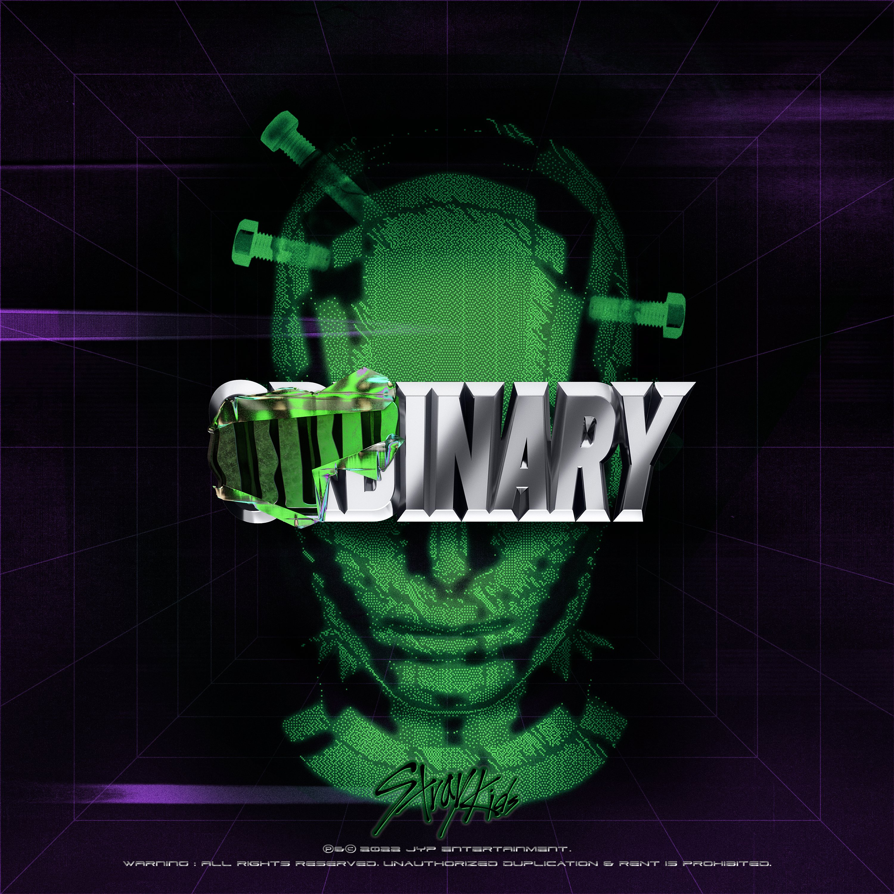
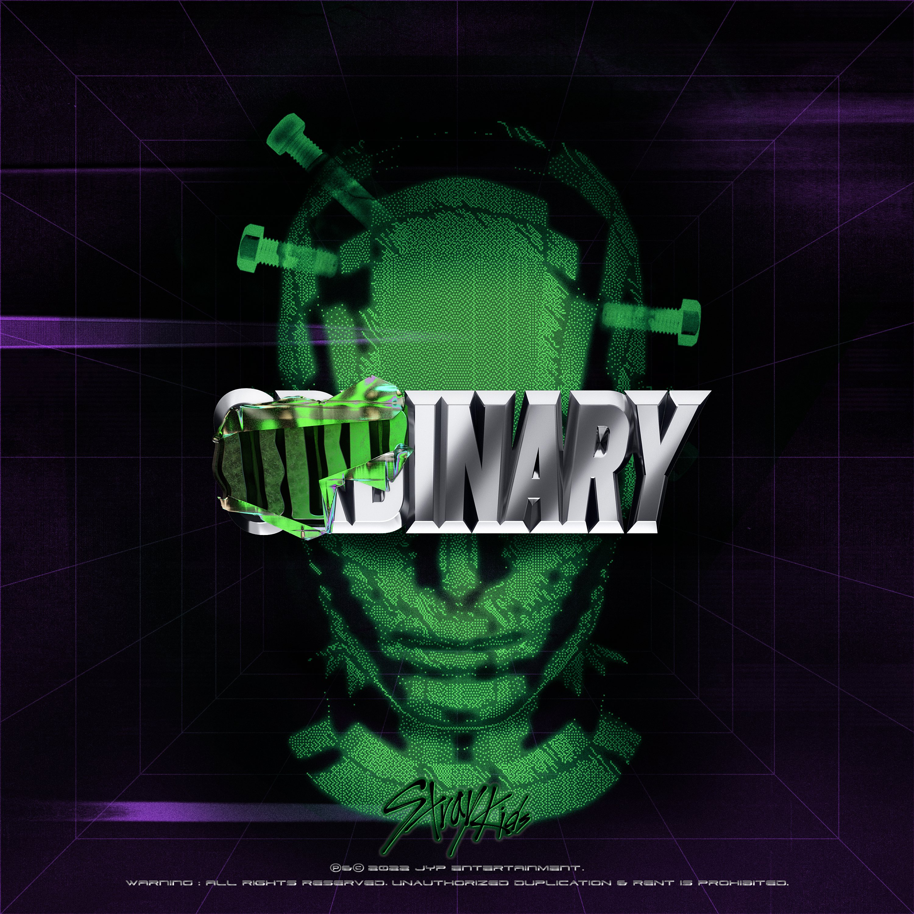

Maniac Song Info
Stray Kids' energetic and powerful performances.
 


Exploring themes of freedom and individuality.
"Maniac" is a hit song by Stray Kids, known for its powerful beats and impactful lyrics.
lyrics
[Intro: Felix]
Let's go
[Refrain: Bang Chan, Hyunjin]
정상인 척 다들 힘 좀 빼
짓고 있는 미소들은 쎄해
Lock이 풀리면 다 똑같지
눈은 날 못 속여, ho
[Verse 1: I.N, Lee Know, Seungmin, Han]
본체는 풀렸네 (Yup, yup)
정신을 간신히 잡지 (Yup, yup)
눈 한번 깜빡이고 back
다시 세상이 정한 정상인 cosplay, 준비, pow
[Pre-Chorus: Han, Changbin]
Mash up, mind blown, 정신은 back up
Prototype 내 속은 언제나 freaky monster
유행 같은 친절함은 철이 지나, rotten
내 통수에 다 시원하게 욕해도 다 먹금
Poppin'
순진하게만 보다가 크게 다침
호의가 계속되면 권리인 줄 아네, toxic
이러니 돌지, warning
[Chorus: Felix, Han, Hyunjin, Changbin, (Bang Chan)]
Maniac
나사 빠진 것처럼 미쳐, maniac
핑핑 돌아버리겠지
Maniac, Frankenstein처럼 걸어
Maniac, maniac (Ha-ha)
Maniac(oh)
나사 빠진 것처럼 웃어 maniac (You can't stop the smoke)
핑핑 돌아버리겠지 (Thick as fog)
Maniac, 비정상투성이 집단 (We're maniacs)
Maniac, maniac
[Verse 2: Seungmin, Felix, Han]
다 터진 인형 실밥처럼 (Ha)
결국 본색이 드러나지
편하지 않은 이 life
It ain't "live," it's "holding on," yeah
[Refrain: I.N, Lee Know]
정상인 척 다들 척 좀 빼
짓고 있는 미소 no fresh해
Locket 풀면 다들 똑같지
눈은 날 못 속여, ho
[Pre-Chorus: Changbin, Felix]
Uh, 내가 걷는 이 거리는 다 지뢰밭
다 언제 터질지 모르는 dormant volcano
얌전했던 바람도 언제 바뀔지 몰라
다들 숨긴 채 살아가 like a sealed tornado
Poppin'
순진하게만 보다가 크게 다침
호의가 계속되면 권리인 줄 아네, toxic
이러니 돌지, warning
[Chorus: Hyunjin, Changbin, Lee Know, Han, (I.N)]
Maniac
나사 빠진 것처럼 미쳐, maniac
핑핑 돌아버리겠지
Maniac, Frankenstein처럼 걸어
Maniac, maniac (Ha-ha)
Maniac (Oh)
나사 빠진 것처럼 웃어 maniac (You can't stop the smoke)
핑핑 돌아버리겠지 (Thick as fog)
Maniac, 비정상투성이 집단 (We're maniacs)
Maniac, maniac
[Bridge: Hyunjin, I.N, Seungmin]
가득해 두 눈은 lunatic
모든 감각이 날 서 있지
예쁘게 포장한 대로 매번 가둬 놓으니
흘러가다 보면 결국 드러나겠지
숨겨진 내면의 그 모습이, yeah
[Post-Bridge: Felix, Bang Chan, Changbin]
Maniac
Maniac, maniac
Maniac
Maniac, maniac (You cannot stop with this feeling)
Ha-ha
[Chorus: Lee Know, Han, Seungmin]
Maniac (Oh)
나사 빠진 것처럼 웃어, maniac (You can't stop the smoke)
핑핑 돌아버리겠지 (Thick as fog)
Maniac, 비정상투성이 집단 (We're maniacs)
Maniac, maniac
⭐⭐⭐
🩷🩷🩷
[Intro: Felix]
Let's go
[Refrain: Bang Chan, Hyunjin]
Relax everyone, stop pretending to be normal
All of your smiles look weird
When the lock is released, we're all the same
Your eyes can't fool me, ho
[Verse 1: I.N, Lee Know, Seungmin, Han]
The real self has been released (Yup, yup)
Barely holding on (Yup, yup)
After blinking once, back
Again, back to cosplaying as what society
Defines normal to be pow
[Pre-Chorus: Han, Changbin]
Mash up, mind blown put my mind on back up
Prototype, on the inside I’m always a freaky monster
Kindness is no longer trеnding, now rotten
You can backbite me as much as you want, I'll ignorе them anyway
Poppin', If you think I'm just pure and innocent, you're wrong
When a favor continues, people think it's their right, toxic
This is what drives me crazy, warning
[Chorus: Felix, Han, Hyunjin, Changbin, (Bang Chan)]
Maniac
Going crazy, like I have a loose screw maniac
Spinning, going crazy
Maniac walk like Frankenstein
Maniac, maniac (Ha-ha)
Maniac (Oh)
Laugh like I have a loose screw maniac (You can't stop the smoke)
Spinning, going crazy (Thick as fog)
Maniac, a maniac group (We're maniacs)
Maniac, maniac
[Verse 2: Seungmin, Felix, Han]
Like the seam of a torn doll (Ha)
Eventually, you'll expose your real self
In this not easy life
It ain't "live," it's "holding on," yeah
[Refrain: I.N, Lee Know]
Relax everyone, stop pretending to be normal
All of your smiles no fresh
When the locket is open, we're all the same
Your eyes can't fool me, ho
[Pre-Chorus: Changbin, Felix]
This street I'm walking on is a minefield
Like a dormant volcano, never know when it'll all explode
Never know when the calm winds will change
Everyone lives hiding themselves like a sealed tornado
Poppin', if you think I'm just pure and innocent, you're wrong
When a favor continues, people think it's their right, toxic
This is what drives me crazy, warning
[Chorus: Hyunjin, Changbin, Lee Know, Han, (I.N)]
Maniac
Going crazy, like I have a loose screw maniac
Spinning, going crazy
Maniac walk like Frankenstein
Maniac, maniac (Ha-ha)
Maniac (Oh)
Laugh like I have a loose screw maniac (You can't stop the smoke)
Spinning, going crazy (Thick as fog)
Maniac, a maniac group (We're maniacs)
Maniac, maniac
[Bridge: Hyunjin, I.N, Seungmin]
Eyes filled with lunatic
All senses are tense
Locked up while wrapped up in that pretty package
As time goes by, it'll eventually be revealed
The inner self that was hidden, yeah
[Post-Bridge: Felix, Bang Chan, Changbin]
Maniac
Maniac, maniac
Maniac
Maniac, maniac (You cannot stop with this feeling)
Ha-ha
[Chorus: Lee Know, Han, Seungmin]
Maniac (Oh)
Laugh like I have a loose screw maniac (You can't stop the smoke)
Spinning, going crazy (Thick as fog)
Maniac, a maniac group (We're maniacs)
Maniac, maniac